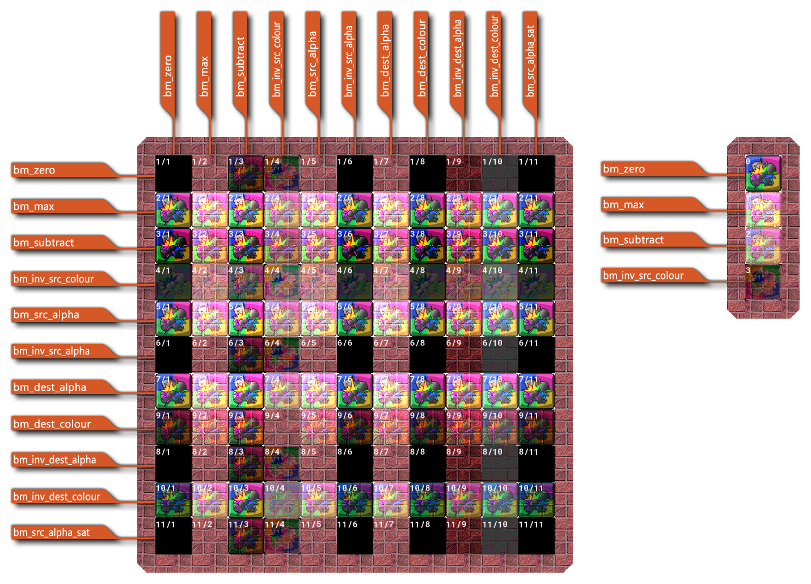

Cuando GameMaker Studio 2 va a dibujar un píxel, hay un color de fuente (el color del píxel que vamos a dibujar) y un color de destino (el color que ya está en el píxel al que estamos dibujando), así que al determinar el nuevo color del píxel, los colores de origen y destino se calculan según el modo de fusión elegido. Cada componente de los colores se almacena como un valor de punto flotante entre 0 y 1, y el nuevo color se calcula multiplicando cada componente del color de origen por algún factor y multiplicando cada componente del color de destino por algún otro factor y luego agregando el resultados juntos componente por componente.
Esta función le permite configurar los diferentes componentes que se deben combinar para crear un modo de combinación personalizado. La fuente y el destino tienen componentes rojo, verde, azul y alfa, y en la siguiente tabla se consideran RGBA de la fuente (Rs, Gs, Bs, As) mientras que los destinos son (Rd, Gd, Bd, Ad). Las once constantes que están disponibles para su uso pueden ser de origen o destino (o ambas) cuando se utilizan en esta función.
Constante Factor de mezcla (rojo, verde, azul, alfa) bm_zero (0, 0, 0, 0) bm_one (1, 1, 1, 1) bm_src_colour (Rs, Gs, Bs, As) bm_inv_src_colour (1-Rs, 1-Gs, 1-Bs, 1-As) bm_src_alpha (As, As, As, As) bm_inv_src_alpha (1-As, 1-As, 1-As, 1-As) bm_dest_alpha (Anuncio, Anuncio, Anuncio, Anuncio) bm_inv_dest_alpha (1-Ad, 1-Ad, 1-Ad, 1-Ad) bm_dest_colour (Rd, Gd, Bd, Ad) bm_inv_dest_colour (1-Rd, 1-Gd, 1-Bd, 1-Ad) bm_src_alpha_sat (f, f, f, 1) donde f = min (As, 1-Ad) Tenga en cuenta que puede proporcionar dos argumentos individuales a esta función o puede suministrar una matriz de argumentos (tal como lo devuelve la función). gpu_get_blendmode_ext por ejemplo). Si se suministra una matriz, debe tener los siguientes dos elementos:
- [0] = modo de mezcla de origen (el valor predeterminado es bm_src_alpha )
- [1] = Modo de mezcla de destino (el valor predeterminado es bm_inv_src_alpha )
Puede ser bastante difícil visualizar cómo funcionan estos diferentes modos de fusión, por lo que a continuación puede encontrar un gráfico simple que muestra la interacción básica de un solo sprite que se dibuja con diferentes combinaciones de modos de fusión en un solo fondo. Tenga en cuenta que los resultados reales del modo de fusión que utilice dependerán en gran medida del color en el sprite, el valor alfa del sprite y el color y el alfa del fondo. 
¡ADVERTENCIA!: No todos los modos de fusión están disponibles en todas las plataformas. Android, Tizen, iOS y HTML5 sin WebGL habilitado no podrán mostrar correctamente los siguientes modos:
- bm_src_colour
- bm_inv_src_colour
- bm_dest_colour
- bm_inv_dest_colour
- bm_src_alpha_sat
gpu_set_blendmode(src, dest);
Argumento Descripción src Factor de modo de mezcla fuente (ver constantes arriba). dest Factor de modo de mezcla de destino (ver constantes arriba)
N/A
gpu_set_blendmode_ext(bm_src_alpha, bm_one);
draw_circle_colour(100, 100, 50, c_white, c_black, 0);
gpu_set_blendmode(bm_normal);
Esto convertirá el negro en transparencia, creando un efecto de "resplandor" del blanco siendo fuerte en el exterior y debilitándose gradualmente más lejos del centro del círculo. El modo de fusión se restablece después de que se dibuja el círculo para garantizar que la combinación de aditivos no se aplique también a todo lo demás después de él.